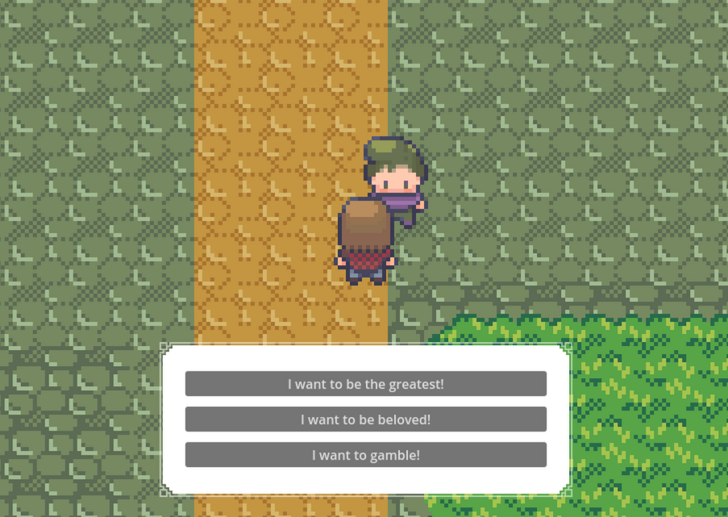

As a final component of the Crabs framework, a Godot-based demo was created to showcase the systems in a game environment.

The demo includes card battles based on a made-up game called PERSI. While inspired by Mau-Mau, it introduces its own rules and pacing.
For full rules and mechanics, please refer to:
RULES
For controls, please refer to: CONTROLS
This demo reflects how the systems are meant to work together — managing branching dialogue logic, handling save data, and tying it all to gameplay and progression.
In making of this demo I borrowed these assets: